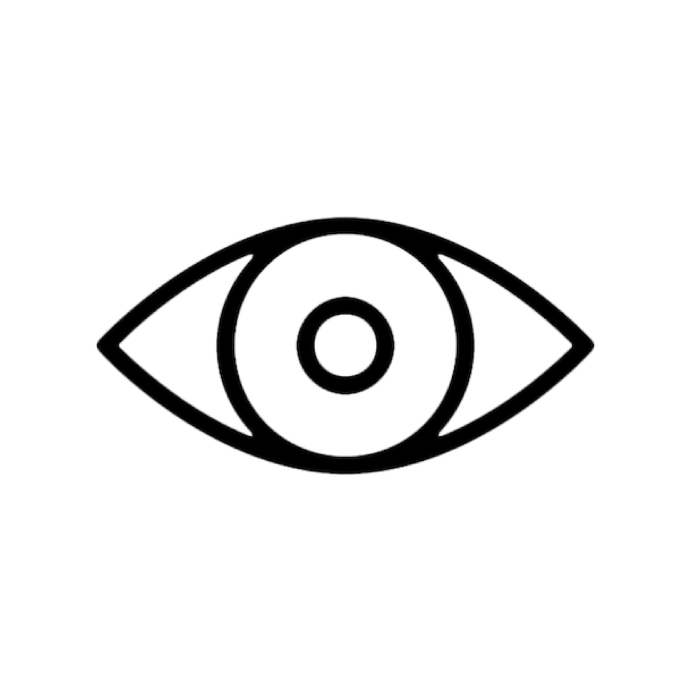

VIZU
Application macOS (.app.zip)
Charge un son, puis genere des visuels reacts old-school style CRT, en direct sur la musique.

Application macOS (.app.zip)
Charge un son, puis genere des visuels reacts old-school style CRT, en direct sur la musique.